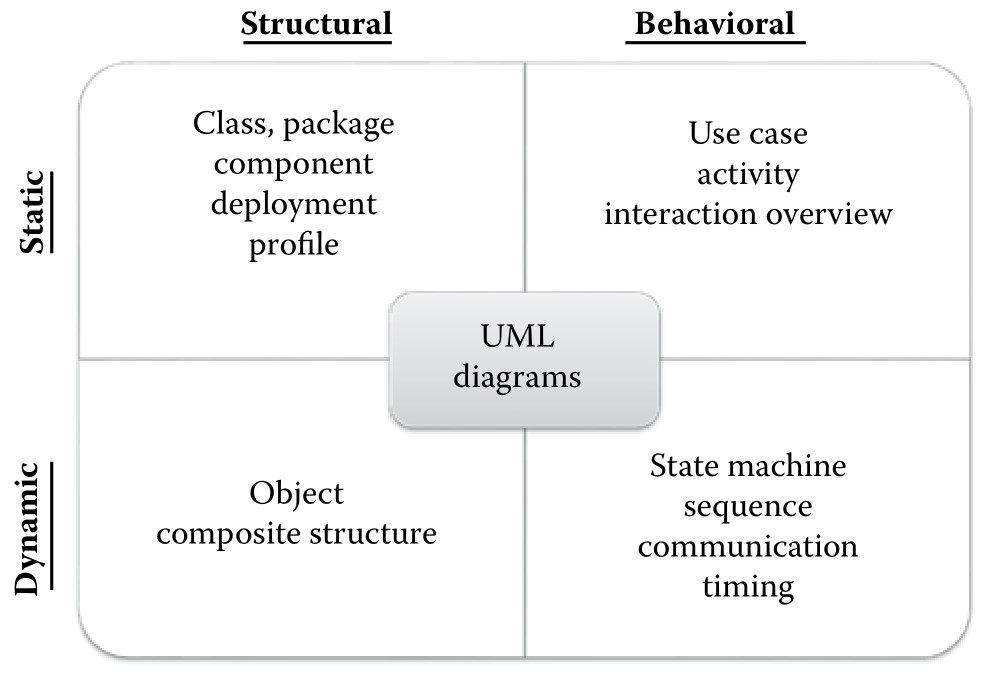
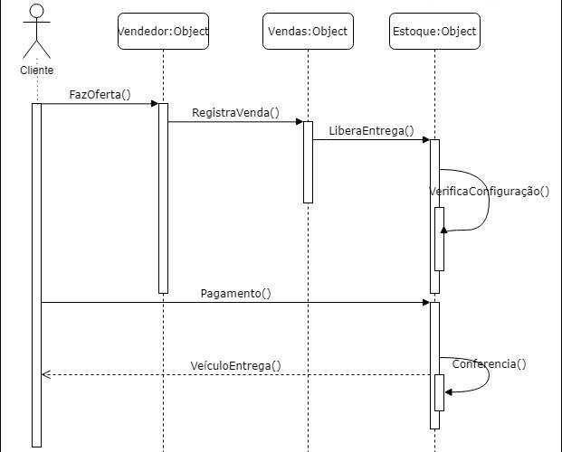

UML - Unified Modeling Language é uma linguagem, principalmente gráfica, para a modelagem de sistemas que é independente de linguagens de programação e de paradigmas de linguagens de programação
UML, ainda que tenha sido muito correlacionada ao Java, por coincidência histórica, não está atrelada a nenhuma linguagem de programação. Não está atrelada nem aos paradigmas de linguagens de programação. Ainda, novamente, que devido a uma coincidência histórica, há, pelo menos um diagrama que é total e inequivocamente relacionado a programação orientada a objetos, o diagrama de classes. Também neste caso, a melhor esplicação seja a coincidência histórica. A UML, o Java e a programação Orientada a Objetos tiveram seu auge nos anos 1990. E, neste cenário é natural que existam relações entre estas três tecnologias.
A UML foi criada para facilitar a análise de sistemas por meio de um processo de modelagem bem definido e documentado.
O objetivo desta linguagem, UML, é fornecer um conjunto de diagramas que permita a modelagem de todos os processos envolvidos na criação de uma solução computacional para um determinado problema. Atualmente a UML é mantida pelo The Object Management Group® (OMG®) que, além de incentivar a adoção desta linguagem, fomenta a adoção do paradigma de programação orientada a objetos.
Estamos atualmente na versão 2.51 e na seção de escopo deste manual é possível ler:
“O objetivo da UML é fornecer a arquitetos de sistemas, engenheiros de software e desenvolvedores de software ferramentas para análise, design e implementação de sistemas baseados em software e para a modelagem de processos de negócio e processos similares”
O parágrafo acima foi traduzido de forma livre mas permite o posicionamento da UML além de uma linguagem de programação específica, diretamente no cenário da modelagem de processos e negócios.
A UML é parte integrante dos processos de engenharia de software sendo constituida de 14 diagramas diferentes. Graças a complexidade do processo de desenvolvimento de software é raro encontrar profissionais especializados em todos estes diagramas. O que vemos com frequência são profissionais usando dois ou três destes diagramas por toda a sua vida profissional já que o conjunto de diagramas têm a pretenção de abordar todos os processos de modelagem é raro encontrar profissionais que precisem de mais de dois ou três diagramas nas suas tarefas dentro do processo de desenvolvimento.
Cada diagrama é voltado para uma parte do processo é necessário que o profissional responsável pela modelagem conheça a área específica do diagrama.
Estruturais vs. Comportamentais: as características estruturais indicam como o negócio está estruturado enquanto os comportamentais indicam o fluxo de informação no sistema.
Estáticos vs. Dinâmicos: diagramas que modelam condições não relacionadas a mudança do tempo são estáticos, todos os outros, são dinâmicos. Mesmo que indiquem um instante do tempo.
Esta classificação dos diagramas serve como referência para o entendimento dos processos que podem ser representados. Assim, um diagrama estrutural pode ser estático ou dinâmico mas não será comportamental. A Figura 1. Apresenta todos os diagramas da UML classificados segundo a sua natureza.

Fonte:(UNHELKAR,2010) Diagramas UML segundo sua natureza
O padrão definido pela UMl 2.51 determina a natureza dos diagramas em apenas duas classes: estruturais e comportamentais. O padrão não impede a mistura de diagramas na criação de um diagrama mais complexo que atenda as necessidades de um projeto específico. Dessa forma, a fronteira entre os diagramas não é rigidamente definida. Existem, no entanto, limitações que são impostas pelas ferramentas que usamos para criar os diagramas que limitam os componentes que podemos usar durante a criação.
A seguir vamos ver cada um dos diagramas de forma introdutória, sem muitos detalhes. Vamos deixar o detalhamento para o momento em que estivermos estudando cada um deles.
Na UML 2.51 são definidos 23 diagramas diferentes. Não vamos detalhar todos eles, para isso, você pode ver a documentação da linguagem versão 2.51.
Use Case Diagrams ou Diagrama de Caso de Uso representam um modelo da interação entre os atores (stakeholders e outros sistemas) com o sistema que está sendo modelado. Captura, em alto nível, os requerimentos do sistema. Não mostra um caso de uso, em vez disso, apresenta os atores, suas funções, sua relações com o sistema e as funcionalidades envolvidas.
Os diagramas de caso de uso são estáticos e comportamentais. São ferramentas importantes para a definição e a compreensão dos requerimentos funcionais de um sistema. A parte comportamental do diagrama é clara pela indicação das ações que estão representadas. Este diagrama deve ser classificado como estático por que as relações entre atores e o sistema, entre atores e atores e mesmo entre diferentestes diagramas de caso de uso não estão explicitadas. O fluxo de informações entre atores, funcionalides e sistemas representados nos diagramas de casos de uso deve ser registrado na documentação que suporta este diagrama. A Figura 2 apresenta um exemplo deste diagrama.
Fonte: o autor (2020) Diagrama de caso de uso - exemplo
O diagrama apresentado na Figura 2 mostra três atores (gerente de loja, vendedor e contador), seus casos de uso e a interação com o sistema. As linha conectando os atores aos casos de uso indicam um associação, ou relação, mas não representam nenhum tipo de dependência. No diagrama da Figura 2 existe um exemplo de extensão (extends) e outro de uso (uses), ou inclusão neste caso, estas são relações de dependência e determinam como determinados casos de uso se relacionam com outros casos de uso.
Activity Diagrams ou Diagrama de atividades são como fluxogramas, são diagramas que modelam o fluxo de informação em um processo. Esta modelagem pode ser feita em processo de negócio ou entre diagramas de casos de uso. Estes diagramas são usados para documentar o fluxo de informação em um determinado caso de uso representando um conjunto de processos de negócio mas podem representar o fluxo de informação entre casos de uso ou, se for o caso, em todo o negócio.
A Figura 3 apresenta um exemplo de Diagrama de Atividades.

Fonte: (BAUSOLA, 2008) Diagrama de Atividades - exemplo
No diagrama mostrado na Figura 3 podemos ver três raias, em inglês swimlanes, a ação de cada ator, o fluxo em que estas ações ocorrem no sistema e qual ator é responsável pela ação em um dado momento. Esta divisão em raias, permite o entendimento das atividades que estão acontecendo ao mesmo tempo e, graças a isso, são ferramentas voltadas a modelagem de processos de negócio em ambientes complexos. Estas raias eram chamadas de swinlanes mas, o padrão mudou na UML 2.51, última versão, são chamadas de partições, do inglês partitions. Neste curso vamos usar os termos raias, partições, swinlanes e partitions sem rigor com a padronização.
Classe Diagrams ou Diagrama de classe são diagramas estruturais e estáticos que representam os elementos mais importantes nos domínios técnico e de negócio. Podem representar tanto as entidades do negócio quanto as entidades necessárias para a criação do software. Neste caso, linguagens de programação orientadas à objetos podem ter seus elementos estrururais diretamente ligados a elementos de negócio.
Além das classes própriamente ditas, os diagramas de classe representam as relações que eventualmente existam entre as classes. Com cada classe representando uma entidade de negócio, ou técnica, o diagrama de classes completo representa todo o espaço do problema que precisa ser resolvido. O conceito de tempo não se aplica ao diagrama de classes. A Figura 4 apresenta um exemplo de diagrama de classes.

Fonte: (WIKIMEDIA, 2016) Diagrama de Classes - exemplo
No diagrama mostrado na Figura 4 quatro classes: Student; Enrolment; Seminar e Professor. Ainda nesta figura, é possível ver a representação dos dados e métodos referentes a cada uma das classes. Por exemplo, a classe Professor armazena os dados: Name, Seminar Number e Fee e possui os métodos: Add Student e Drop Student. A relação entre estas classes também pode ser vista na Figura 4 mas, vamos deixar para detalhar isso quando estivermos estudando este diagrama específicamente.
Sequence Diagrams ou Diagrama de sequência apresentam as entidades que participam de um determinado caso de uso e as mensagens que são trocadas entre eles ao longo do tempo. Trata-se de um diagrama dinâmico que permite a visualização explicita das memsagens passadas entre entidades em uma interação específica.
Este é um dos diagramas mais populares desde sua criação por Jacobson (WIKIPEDIA, 2020), criando uma forma de representar o comportamento das entidades em um caso de uso e, graças a isso, são populares tanto entre os analistas de sistemas quanto entre os analistas de negócios.

Fonte: o autor (2016) Diagrama de Classes - exemplo
No exemplo apresentado na Figura 4 é possível ver um ator, cliente, interagindo com objetos de um sistema de vendas de veículos. Este é um sistema totalmente automatizado onde o vendedor é um objeto do sistema. As linhas pontilhadas indicam o tempo de vida da entidade no sistema, as caixas retangulares verticais indicam uma ocorrência de execução e são utilizadas quando os objetos estão enviado e recebendo mensagens.
Uma mensagem é uma troca de informações entre entidades do sistema, podem ocorrer, neste diagrama, entre atores e objetos, objetos e objetos e entre diagramas. As mensagens são representadas por linhas contínuas que são chamadas de links. Este diagrama representa os eventos em uma sequência temporal mais precisa, e menos granulada, que o Diagrama de Atividade e com ele podemos entender o que acontece no período de tempo entre duas mensagens.
Object Diagrams ou Diagrama de objetos representa um determinado momento congelado no tempo destacando as entidades do sistema, objetos e atores, e seu relacionamento neste momento específico. Mostra os objetos em tempo de execução de forma estática. Como se fosse uma fotografia de um processo em andamento.

Fonte: o autor (2020) Diagrama de objetos - exemplo
No exemplo apresentado na Figura 4 é possível ver diversos objetos, sua relação e seu estado em um dado momento do tempo. Não é comum mas, dado a flexibilidade da UML, podemos incluir atores no diagrama de objetos sempre que o estado, ou mensagem, originada de um ator, for importante para a definição do estado que está sendo modelado. O uso de atores ocorre, principalmente, quando estamos modelando objetos de interfaces.
São diagramas de comportamento, estáticos, usados para descrever um conjunto de ações, casos de uso que um determinado sistema deve realizar por meio da interação de um ou mais atores.
Todas as interações, casos de uso, devem produzir um resultado de valor para os atores envolvidos ou para algum outro stakeholder.
Um ator é uma função do sistema que será realizada por uma pessoa, ou coisa, externa ao sistema. O ator, interage com o sistema para permitir que o sistema atinja seus objetivos. O ator é a função, não a pessoa que está executado a função e, como tal, um ator pode participar de vários casos de uso.
Um ator pode representar qualquer entidade, qualquer coisa, que envie mensagens para o sistema, ou se preferir, que interaja com o sistema. Os atores servem como ponto de origem para a modelagem das interfaces com o sistema. Sejam estas interfaces entre humanos e o sistema ou entre sistemas de características diferentes. E, como um determinado ator pode participar de vários casos de uso, ele pode representar diversos objetivos. Contudo, é preciso ressaltar que cada caso de uso deve representar a craiação de valor para o ator ou outro stakeholder, com um resultado palpável. Temos a tendência de só olhar os atores pelo ponto de vista da origem do caso de uso e, é necessário perceber que existem atores que representam o resultado do caso de uso. São os atores que consomem as informações geradas no sistema. Encontrar e classificar os atores de forma correta é imprescindível para o sucesso da análise do sistema.
Este é um processo que requer prática. Não tente acertar da primeira vez. Crie uma lista dos atores que você acredita que irão interagir com o sistema. A identificação dos atores começa nos processos de elicitação de requerimentos. Técnicas como entrevista, questionário e observação podem, e devem ser usadas para a identificação dos atores. A melhor forma de otimizar este processo é garantir que um dos resultados do processo de elicitação de requisitos seja a identificação dos atores que irão interagir com o sistema, já criando uma lista de funções e sistemas externos. Descobrimos atores respondendo pergutas sobre o sistema:
Atores primários: aqueles para os quais o sistema existe. Estes são os principais beneficiários do sistema. Atores secundários: são atores cuja função existe no sistema mas que não iniciam interações ou são beneficiados por elas.
A classificação entre atores primários e secundários depende do sistema, da interação iniciada e da visão do analista no momento da modelagem. Uma regra geral determina que os atores primários são aqueles para os quais o sistema está sendo desenvolvido. Por exemplo: pacientes, médicas e infermeiras em um sistema hospitalar ou vendedor e comprador em um sistema de vendas.
Atores diretos: são os atores que efetivamente usam o sistema. Voltando ao exemplo do sistema hospitalar podemos classificar o atendente de balcão como um ator direto já que é ele que irá dar entrada nos dados dos pacientes. Atores indireto: são os atores afetados pelo sistema mas que não usam o sistema. De volta ao exemplo do sistema hospitalar, um paciente é um ator indireto.
Mesmo que o paciente seja um ator primário já que o sistema será feito para atendê-lo, ele não interage diretamente com o sistema. Talvez, a única exceção a esta regra esteja nos sistemas com auto nível de automação, nos quais o paciente precisa registrar sua entrada e sua saída de forma eletrônica. Ainda assim, ele só será classificado como direto nestes casos de uso em que interage diretamente com o sistema.
Além de principal e secundário, direto e indireto, ainda podemos classificar os atores em abstrato e concreto. Esta última classificação aparece explicitamente nos Diagramas de Casos de Uso.
A UML permite a generalização de atores. Desta forma, atores podem herdar as características de outros atores. Novamente recorrendo ao exemplo do sistema hospitalar, podemos ter um ator paciente_privado que represente um paciente de plano de saúde, e um ator paciente_sus que represente os pacientes que serão atendidos segundo o SUS (Sistema Unificado de Saúde). Estes dois atores podem herdar as característics do ator paciente. Assim, nos preocuparemos em descrever apenas as interações específicas para estes atores.
Atores abstratos: são os atores que servem como base para a definição das interações e características de outros atores. Atores concretos: são os atores que herdam características de um outro ator.
No exemplo que discutimos anteriormente, os atores paciente_sus e paciente_privado são concretos enquanto o ator paciente é abstrato. Este processo de generalização permite que a complexidade dos diagramas de casos de uso seja reduzida e, como este processo é chamado de herança, precisa ser especificado de acordo com as normas da UML. A relação entre ator abstrato e ator concreto será feita com uma seta de herança, como pode ser visto na Figura 7.

Fonte: o autor (2020) Diagrama de objetos - exemplo
Observe que, na Figura 7, tomei algumas liberdades. Como a UML não define como devemos nomear nossos atores, eu usei a primeira letra maiúscula para indicar o ator abstrato. Uma opção melhor seria colocar uma indicação de que o nome se refere a um ator, para o uso em outros diagramas onde não veremos a figura, e talvez um número de referência. Poderia ter nomeados os meus atores como: A1_Paciente, A2_paciente_sus e A3_paciente_privado. Mas NUNCA use apenas letras números.
A principal característica de um bom modelo, ou código, é inteligibilidade e a inteligibilidade depende da legibilidade do seu código.
O nome dos atores deve ser descritivo da sua função. Este processo de identificação dos atores é responsabilidade do analista que está modelando o sistema. Então faça com que os nomes sejam claros para você e para todas as pessoas que algum dia irão usar o seu modelo.
Uma vez que seus atores tenham sido identificados, uma boa prática de modelagem indica que, devemos documentar estes atores. O nome, a classificação, e uma descrição são suficientes. A UML não especifica como devemos documentar os atores. Lembre-se a modelagem é, em si, um processo de documentação. Contudo, como nossos atores são originados de um processo de elicitação de requisitos. Esta documentação pode ser criada durante este processo e servirá de base para a criação dos Diagramas de Casos de Uso.
Nome: paciente_sus Classe: ator concreto herdeiro de Paciente Descrição: Ator para indicar os pacientes que serão tratados no hospital de acordo com as regras determinadas pelo convênio com o SUS. Utilizará o sistema de forma direta apenas para registar sua entrada no hospital e sua saída. Não esquecer a necessidade de assinatura nos documentos relativos ao convênio com o SUS.
Você pode baixar a versão em pdf desta aula clicando aqui
BAUSOLA, D. Activity Diagram. zeroinfluence, 2012. Disponivel em: http:zeroinfluence.wordpress.com/uml. Acesso em: 04 Ago. 2020. DENNIS, A.; WIXOM, B. H.; ROTH, R. M. System Analysis and Design. Danvers, MA. USA: John Wiley & Sons, Inc., 2009. OBJECT MANAGEMENT GROUP. Unified Modeling Language. Object Management Group, 2017. Disponivel em: https://www.omg.org/spec/UML/2.5.1/PDF. Acesso em: 04 ago. 2020. SOMMERVILLE, I. Engenharia de software. São Paulo, SP. Brasil: Pearson , 2012. UNHELKAR, B. Software Engineering with UML. Boca Raton, FL. USA: Taylor & Francis Group, LLC, 2018. WIKIMEDIA COMMONS, THE FREE MEDIA REPOSITORY. File:ClassDiagramInitial.jpg. Wikipedia, 2016. Disponivel em: https://commons.wikimedia.org/w/index.php?title=File:ClassDiagramInitial.jpg&oldid=407262714. Acesso em: 04 ago 2020. WIKIPEDIA CONTRIBUTORS. Ivar Jacobson. Wikipedia, 2020. Disponivel em: https://en.wikipedia.org/w/index.php?title=Ivar_Jacobson&oldid=944058726. Acesso em: 4 ago. 2020.
{kind=link}